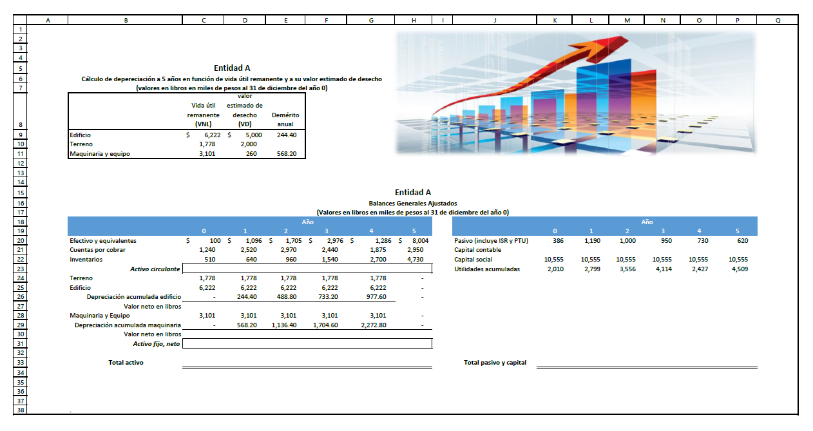
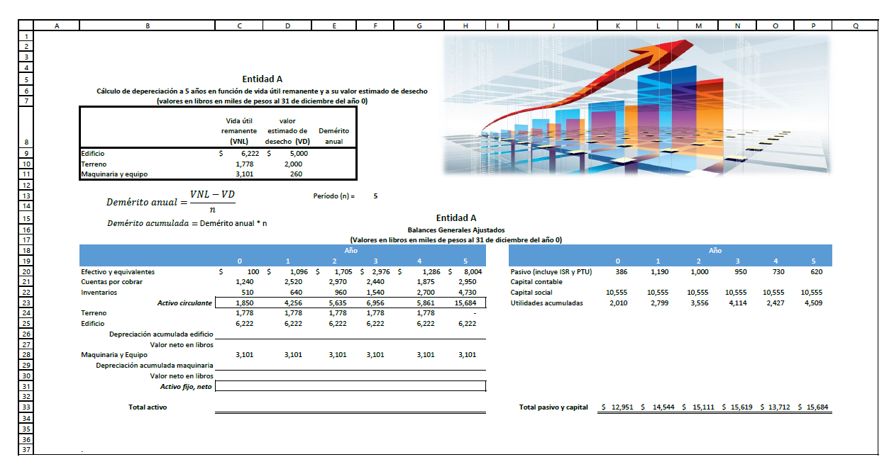
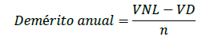
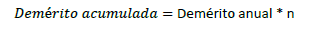

Celdas Relativas, Absolutas o Mixtas

A. Utilizar las herramientas de la Hoja de Cálculo de Excel para dar formato a las celdas, datos y crear fórmulas relativas, absolutas o mixtas. Actividad a realizarse de forma individual.
Para el desarrollo de la actividad seguir las siguientes instrucciones.
PARTE 1
1.- Abre el archivo de Excel Actividad 18 y guárdalo con el nombre EC3-ACT18-APELLIDOS.
2.- Da formato a la información según la siguiente tabla modelo. Utiliza cualquier imagen y tipo de fuente que desees, pero considera las características de formato de celdas: estilo, ajustes de texto, bordes, relleno de color, formato de número, orientación y alineación, tal como se visualiza.

3.- Obtener el valor Total del activo circulante, activo fijo, neto y total de activo por cada uno de los años. Hacer una fórmula en las celdas C23, C27, C30, C31 y C33 correspondientes al año 0. Copiar las fórmulas para los siguientes años.
Total de Activo circulante = Efectivo y equivalentes + Cuentas por cobrar + Inventarios
Valor neto en libros del Edificio = Valor de Edificio - Depreciación acumulada del Edificio
Valor neto en libros de Maquinaria = Valor de Maquinaria y Equipo - Depreciación acumulada de Maquinaria
Activo fijo, neto = Terreno + Valor neto en libros del Edificio + Valor neto en libros de Maquinaria
Total activo = Total de Activo circulante + Activo fijo, neto
4.- Obtener el valor Total de pasivo y Capital para los diferentes años. Hacer la fórmula correspondiente para el año 0 en K33 y copiar la fórmula para los siguientes años.
Total pasivo + capital = pasivo (incluye ISR y PTU) + Capital social + Utilidades acumuladas
PARTE 2
1.- Copiar toda la información desarrollada en la PARTE 1 a otra hoja. Establecer a esta nueva hoja el nombre de ACT18(B). Para hacer una copia exacta de lo anterior, dar un clic con el botón derecho del Ratón a la pestaña ACT18(A), seleccionar Mover o copiar- activar Crear una copia y ACEPTAR.
2.- Hacer los cambios pertinentes a esta nueva hoja para que se visualice de la siguiente forma:

3.- Calcular en la columna E el Demérito anual que le corresponde al Edificio y a la Maquinaria tomando en consideración la Fórmula:
Considerar solamente referencias de celdas, no establecer valores en la fórmula. Hacer una fórmula en E9 y copiarla para E11.
4.- Obtener el valor de la depreciación acumulada de la Maquinaria y del Edificio tomando en consideración la Fórmula:
Considerar solamente referencias de celdas, no establecer valores en la fórmula. Hacer una fórmula en C26 y otra en C29 para el año 0, y copiarla para los siguientes años.
5.- Tomar en cuenta las fórmulas vistas en la parte 1 para obtener valor neto en libros, Activo fijo, neto y Total Activo.
B. Enviar la evidencia de esta actividad, en formato Excel a través del área establecida para ello en la Plataforma Educativa Virtual Institucional.